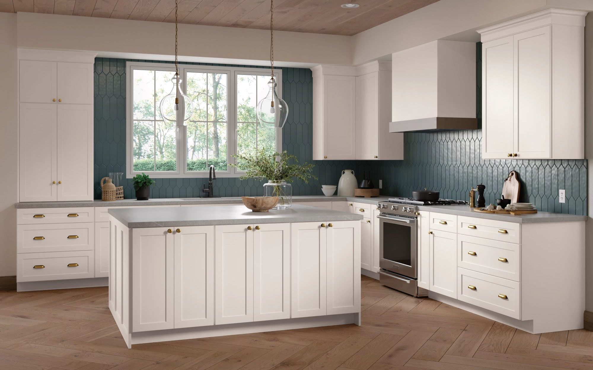
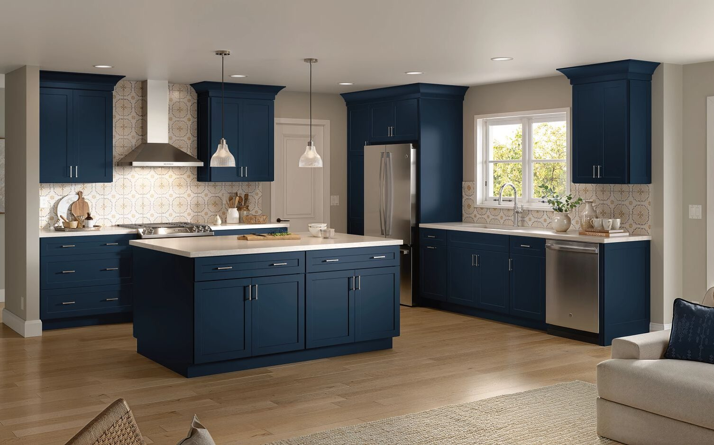
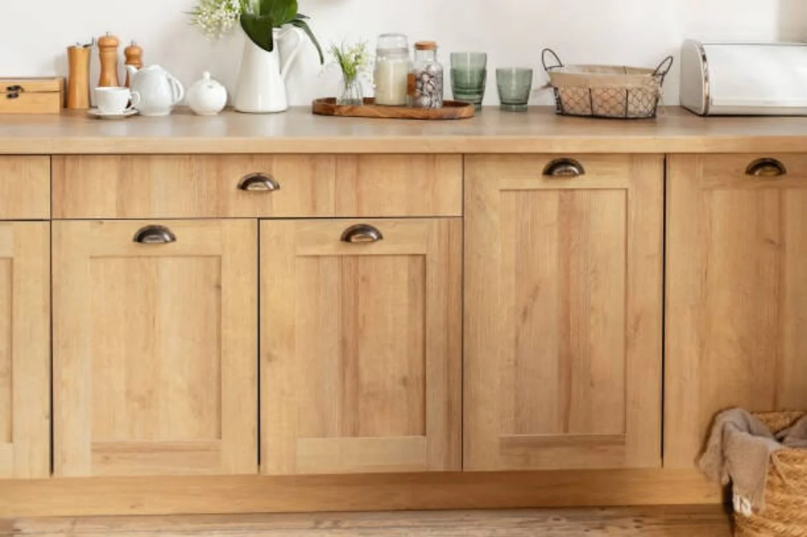
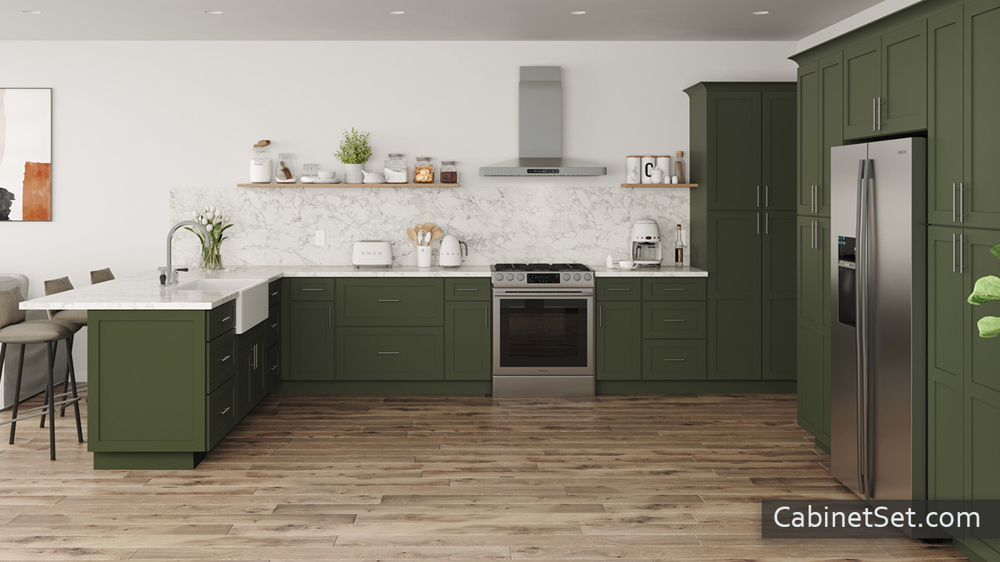

Shaker Cabinets

Shaker Cabinets: minimal, modern, timeless, flexible
White shaker cabinets are as classic and timeless as they come. Picture above is classic matte white, but these cabinets are notrious for looking incredible in many colors based on preference.
Featuring cope and stick construction and 1/4" recessed panel in the center, this simple, yet elegant design, has been around for at least 150 years. The minimalist style mirrors that of the original makers lifestyle, the Northeastern American Quakers of the 18th century, that featured modest and practical design over excess guadiness.
Wood Types
- Maple
- Oak
- Birch
- Cherry
- Pine
- Particle Board
Door Construction Steps
- Make a plan outlining thickness and type of materials
- Wood Type
- Rails
- Stiles
- Panels
- Dowel Joinery
- Prepare wood stock
- Designate total length and width of doors
- Plane the wood type 3/4" thick
- Rip pieces 2.5" wide
- Cut pieces to length and sort into piles
- Sort pieces into piles
Note: There should be two rails and two stiles in each pile
Note: Rails are horizontal peices while stiles are vertical pieces
- Layout the Pieces
- Arrange pieces based on which face to show and wood grain flows well
- Mark all joists for assembly
- Mark dowel jig location for joiner assembly
- Simple Dowel Joinery
- This step requires a dowelling jig
- Drill holes in the ends of the rails and stiles
- Join the pieces with glue and dowels
- Now that the frame is made, use clamps to hold together
Note: dowel joinery is a different construction style than traditional cope and stick construction
- Flat Panels
- Use router table
to cut a rabbet in the back of the frame. This rabbet will receive the plywood panels.
One should be cautious during this cut to make sure cut is not to deep and ruin the frame.
- Use chisel to square up corners
Note: This guide uses plywood panels instead of wood panel for this step. Plywood panels have less expansion and contraction, thus there is no need to float the flat panel like one would using a piece of solid wood.
- Assembly and Finishing
- Cut plywood panels to size and glue into rabbet
- One should make sure to use two-sided plywood that looks good for interior and exterior of the door as both will be visible
- Use 5/8" brad nails and nail at 45-degree angle to hold panel in place as glue dries
- One can just glue and clamps with no issues, however brad nails expedite the process
- Finish panels with three coats of Minwax oil-modified polyurethane.
- The finish is a matter of preference based on preference of paint, laquer, or stains among other options.
Thank you to Words N Woods for making this guide possible.
Photos of Shaker Cabinet Kitchens

Blue Shaker Cabinets

Wood Finish Shaker Cabinets

Green Shaker Cabinets